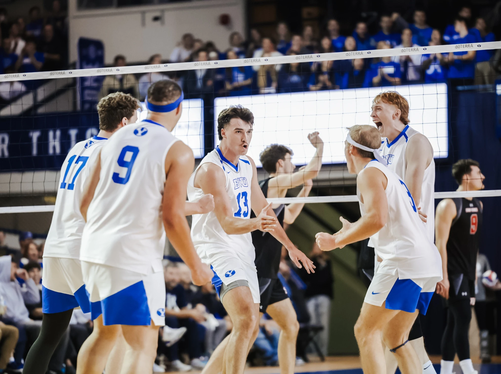
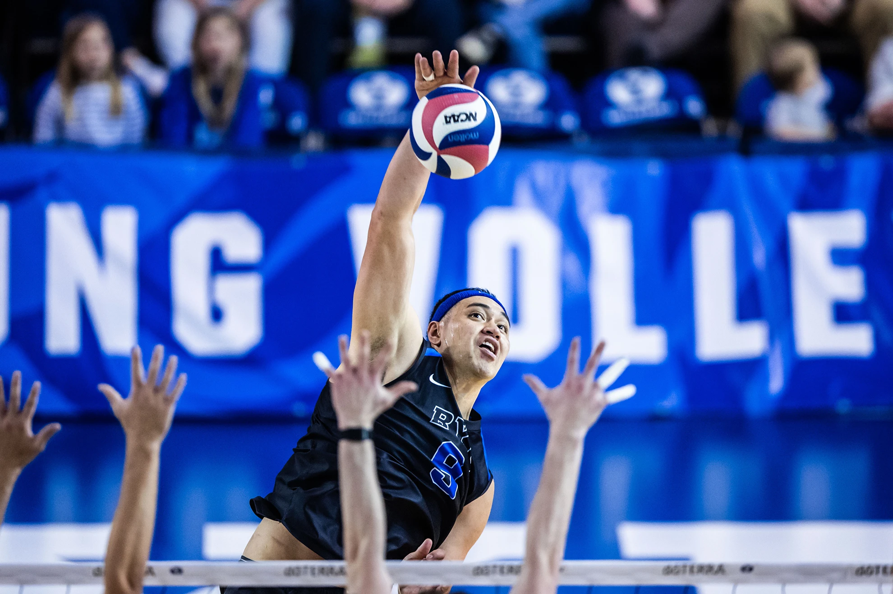
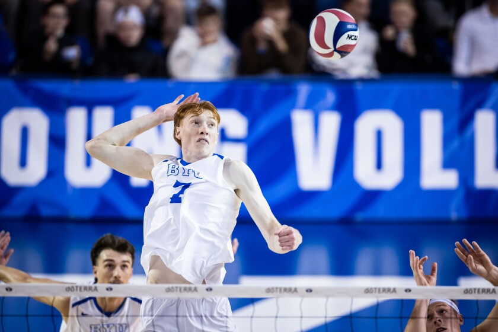
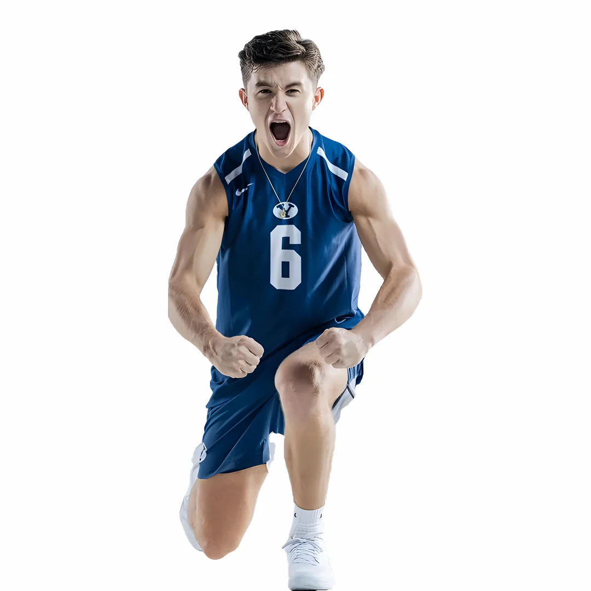

The BYU Men’s Volleyball Team
The Brigham Young University (BYU) men’s volleyball team has long been a powerhouse in collegiate volleyball, known for its consistent excellence, talented players, and passionate fan base. Competing in the Mountain Pacific Sports Federation (MPSF), the Cougars have secured their reputation as one of the best teams in the nation. This success is built on a legacy of skilled coaching, rigorous training, and a deep commitment to the sport.

Heading 2
Check out the BYU Men's volleyball team!A cornerstone of BYU’s volleyball success lies in its coaching staff, which has cultivated talent and built a culture of excellence over the years. Coaches like Carl McGown, who led the team to its first NCAA title in 1999, and Shawn Olmstead, the current head coach, have emphasized discipline, teamwork, and innovation. Their leadership has consistently kept BYU in contention for national championships.
- AJ Cottle
- Teilon Tufuga
- step 1
- step 2
- step 3

- Jackson Fife


Another heading
Heading 3
The team’s rich history of achievements underscores its dominance. BYU has won the NCAA Men’s Volleyball Championship multiple times, including in 1999, 2001, and 2004, and frequently appears in the Final Four. These victories are not just milestones but also testaments to the program’s ability to maintain excellence across generations of players.Heading 4
Player development at BYU is another key factor in the team’s success. The program attracts top talent from across the country and internationally, drawing players like Taylor Sander and Gabi Garcia Fernandez, who have gone on to make waves in professional volleyball. These athletes embody BYU’s emphasis on hard work, skill development, and adaptability.Heading 5
One of the defining characteristics of BYU volleyball is its passionate fan base. Known as the ROC (Roar of Cougars), the student section at BYU games creates an electrifying atmosphere in the Smith Fieldhouse. This home-court advantage has often played a crucial role in tight matches, boosting player morale and intimidating opponents.Heading 6
The team’s playing style is a blend of power, precision, and strategy. BYU is renowned for its strong serving, aggressive attacking, and disciplined defense. This combination not only leads to victories but also makes their matches exciting to watch, earning respect from fans and opponents alike.BYU’s commitment to academic and athletic excellence sets it apart from many other programs. Players are expected to excel in their studies while maintaining high performance on the court. This dual focus ensures that BYU athletes are well-rounded individuals prepared for life beyond volleyball.
Cultural diversity is another strength of the BYU volleyball program. With players from different countries and backgrounds, the team fosters a global perspective and inclusivity. This diversity enriches team dynamics and brings unique playing styles and techniques to the court.
Challenges have not been absent from BYU’s journey, but the team’s resilience and determination have consistently turned obstacles into opportunities for growth. Whether facing injuries, tough competition, or rebuilding years, BYU always finds a way to rise to the occasion.
In conclusion, the BYU men’s volleyball team is a symbol of excellence in collegiate sports. From its exceptional coaching and talented players to its passionate fans and winning culture, the team represents what is possible through dedication and teamwork. Their legacy continues to inspire and set a high standard for volleyball programs nationwide.

Jump to top